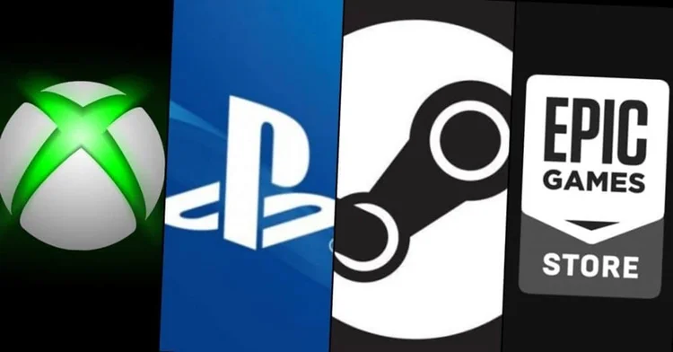

https://store.steampowered.com/app/2183900/Warhammer_40000_Space_Marine_2/
https://store.steampowered.com/app/2183900/Warhammer_40000_Space_Marine_2/
What is Space Marine 2?
Space Marine 2 is a third-person action game from developer Saber Interactive and publisher Focus Entertainment. It's the sequel to the 2011 video game "Warhammer 40,000: Space Marine." The player assumes the role of a Space Marine a superhuman fighter of the Imperium of Man going against an alien race called Tyranid. The game is full of brutal combat, with a great deal of emphasis on close combat and ranged weapons. It expands upon the lore and aesthetic. One will find a mixture of brutal action, engrossing narrative, and visually stunning environments set within the dark dystopian future of the Warhammer 40K universe.
 https://www.tecmundo.com.br/voxel/210855-steam-psn-epic-xbox-outros-servicos-tem-queda-noite-10.htmWhere can you buy this game?
You can buy "Warhammer 40,000: Space Marine 2" from several platforms. Steam: Available for PC users. You can find it by searching for the title on the Steam store. PlayStation Store: Available for PlayStation 5. You can purchase it directly from the PlayStation Store on your console or through the website. Xbox Store: Available for Xbox Series X|S. Similar to the PlayStation Store, you can buy it on your console or via the Microsoft Store online. Epic Games Store: Another option for PC gamers, the Epic Games Store may offer exclusive promotions or bundles at launch. Always check for the latest information on release dates, as well as any special editions or bonuses that may be available at launch!